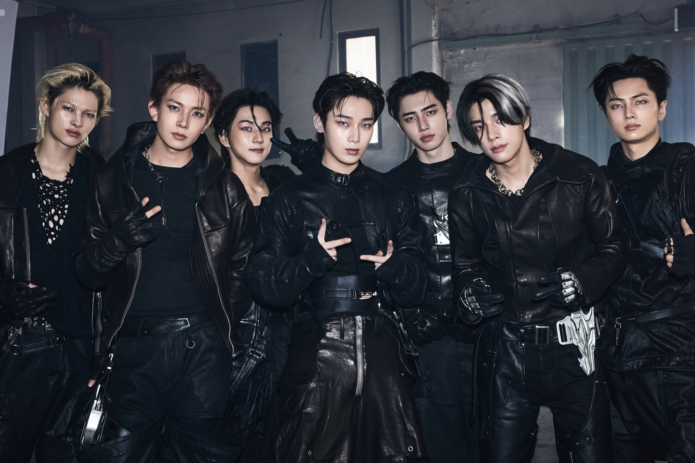

K-Pop Fans Crash South Korea's $900 Billion Pension Fund Over ENHYPEN Heeseung Exit

In an unprecedented collision of K-pop fandom activism and government finance, angry fans of ENHYPEN crashed the telephone and email support lines of South Korea's National Pension Service (NPS)—a $900 billion sovereign wealth fund—demanding answers about the departure of member Heeseung from the popular boy band.
The incident, reported by Reuters and confirmed by NPS officials, represents one of the most unusual examples of K-pop fan mobilization in recent memory, demonstrating the lengths to which devoted fans will go to seek accountability from entertainment companies.
How It Happened
On March 10, 2026, BELIFT LAB—the HYBE-affiliated agency managing ENHYPEN—announced that Heeseung would no longer continue as a member of the seven-member group. The announcement came with minimal explanation, leaving fans scrambling for answers.
Within days, ENGENEs (ENHYPEN's fandom) discovered that the NPS holds a stake in HYBE, the entertainment conglomerate that owns BELIFT LAB. Armed with this information, fans coordinated on social media platform X (formerly Twitter) to flood the pension fund's support channels.
"We found out that some users on X posted the support centre numbers of the NPS online and mobilised others to protest the removal of an Enhypen member," NPS spokesperson Kim confirmed to Reuters.
According to NPS data, the fund received over 1,500 emails and phone calls within a two-hour window, effectively shutting down their customer service operations.
The Global Dimension
What made this protest particularly disruptive was its international scope. Kim noted that after the initial domestic surge, "the fund was subsequently hit by overseas phone calls and more than 1,500 emails of protest" from fans worldwide.
ENHYPEN boasts a significant international fanbase, with large followings in Japan, Southeast Asia, North America, and Europe. The coordinated global response demonstrated both the sophistication of modern fan organizing and the unexpected vulnerabilities of governmental institutions in the social media age.
Why the Pension Fund?
The National Pension Service is South Korea's largest institutional investor, managing retirement funds for millions of Korean citizens. As part of its investment portfolio, NPS holds stakes in numerous Korean corporations, including entertainment giant HYBE.
Fans argued that as a shareholder, NPS has a responsibility to ensure proper corporate governance at HYBE and its subsidiaries. By targeting the pension fund, they hoped to apply pressure through an unexpected avenue—one that BELIFT LAB and HYBE couldn't simply ignore.
"If they're investors, they should care about how these companies treat their artists," one fan account posted on X, summarizing the logic behind the campaign.
The "ENHYPEN Is 7" Movement
The pension fund protest is just one facet of the broader "ENHYPEN Is 7" movement that erupted following Heeseung's departure. Fans have organized:
- Billboard truck campaigns outside BELIFT LAB headquarters
- Coordinated hashtag campaigns trending worldwide
- Petition drives demanding transparency from the agency
- Boycott threats against upcoming ENHYPEN releases
The scale of fan anger reflects both Heeseung's popularity—he was often considered the group's most vocally talented member—and frustration with what fans perceive as a pattern of poor communication from HYBE-affiliated agencies.
Government Response
NPS officials expressed frustration with the situation while acknowledging they were caught off guard by the unprecedented nature of the protest.
"Our pension services are for the benefit of Korean citizens planning for retirement. We are not in a position to intervene in the personnel decisions of individual companies in our portfolio," a spokesperson stated.
However, the incident has raised questions about shareholder activism and corporate governance in South Korea's entertainment industry—an industry that generates billions in revenue but often operates with limited transparency regarding artist treatment.
BELIFT LAB's Continued Silence
Despite the escalating protests, BELIFT LAB has provided no additional details about Heeseung's departure beyond their initial statement. The agency has not commented on the pension fund incident or the broader fan movement.
This silence has only intensified fan speculation and frustration. Social media theories range from contract disputes to personal issues to conflicts within the group—none of which have been confirmed or denied by the agency.
Industry Implications
The pension fund protest sets a remarkable precedent for K-pop fan activism. By identifying and targeting corporate stakeholders outside the traditional entertainment industry structure, fans have demonstrated a new level of strategic sophistication.
Industry observers note that this approach could be replicated in future disputes, potentially creating unexpected pressure points for entertainment companies and their parent corporations.
"K-pop fans have always been organized, but this is something else entirely," noted one Korean entertainment analyst. "They've essentially found a way to make a personnel dispute into a corporate governance issue."
What Happens Next
As of publication, ENGENEs show no signs of backing down. Additional protests are planned, including demonstrations outside HYBE's headquarters and continued social media campaigns.
Meanwhile, the remaining six members of ENHYPEN are scheduled to continue promotional activities, including a Japanese album release that notably still features Heeseung in promotional materials—a decision that has sparked yet another wave of controversy.
For now, South Korea's pension fund has returned to normal operations, but the incident will likely be remembered as one of the most unusual chapters in K-pop fan history—a moment when the line between fandom and financial activism blurred in unprecedented ways.